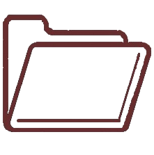

Bienvenido al Centro de Investigaciones CUYO
Desde 1975, el Centro de Investigaciones Cuyo se dedica a la generación de conocimiento científico de excelencia en las áreas de Educación, Psicología, Psicología Social y Economía. Ubicados en el corazón de la región de Cuyo, trabajamos comprometidos con el desarrollo y la innovación, buscando siempre respuestas a los desafíos actuales de la sociedad. Nuestro equipo de investigadores y becarios, respaldado por el CONICET, lidera proyectos interdisciplinarios que abordan problemas sociales, educativos y económicos, con un enfoque regional y proyección nacional e internacional. Nos enorgullece ser pioneros en la investigación científica en Mendoza y seguir construyendo un futuro basado en la excelencia académica.
¿Qué encontrarás aquí?
-

-

-
-
Proyectos
Recursos
Equipo
Noticias
Sobre Nosotros
El Centro de Investigaciones Cuyo fue fundado en 1975 bajo la dirección del Dr. Abelardo Pithod, con el respaldo del CONICET, y en colaboración con un destacado equipo de investigadores de Mendoza. Esta institución se posicionó como pionera en la provincia, abriendo nuevos horizontes para la investigación científica en la región.
El Centro tiene como misión principal impulsar el avance del conocimiento en áreas clave como la Educación, la Psicología, la Psicología Social y la Economía, con un enfoque especial en las necesidades y particularidades de la región de Cuyo. A lo largo de su trayectoria, ha desarrollado proyectos de investigación interdisciplinarios de alto impacto, que han contribuido al fortalecimiento académico y social de la región.
Actualmente, el Centro es dirigido por la Dra. Hilda Difabio, quien lidera un equipo de investigadores consolidados y becarios de CONICET, comprometidos con la excelencia académica y el desarrollo de investigaciones innovadoras. Este equipo continúa con la tradición de liderazgo científico del Centro, destacándose por su dedicación al abordaje de los desafíos contemporáneos en el ámbito de las ciencias sociales y humanas.